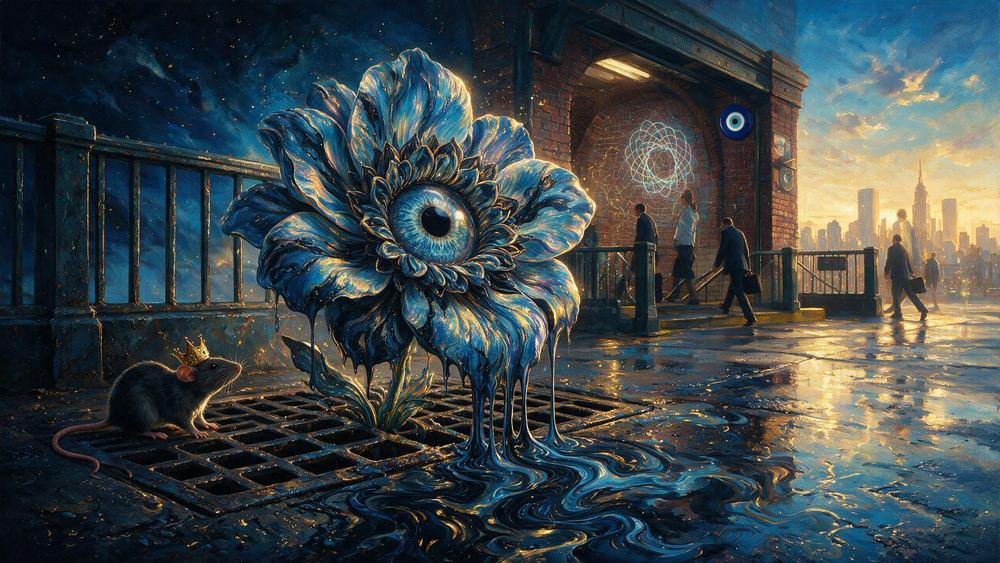

NEW YORKERS / BY MLOW
A city of
characters.
A painted census of New York. The people, the places, the beautiful madness of belonging here.
7,541 painted characters. One artist. Every one has a story.

NO. 1467 The First Eye FlowerMeet this New Yorker ↗ONE OF SEVEN THOUSAND FIVE HUNDRED AND FORTY ONE
Say hello to a stranger.
FOUR QUESTIONS
Which New Yorker are you?
Everybody in this city is already a character. This just tells you which one, out of all 7,541, and it does not flatter you.
A FEW FACES TO START WITH
Find your New York.
THE CITY IS THE GALLERY
Take a little
walk with us.
Enter an artist-built New York, with paintings on the walls and space to wander. Pick a room. Look around. Stay a while.
Choose your first room ↗No sign-in needed. Guided tours and touch controls included.
 THE GREAT HALL Walk inside ↗
THE GREAT HALL Walk inside ↗FOLLOW YOUR CURIOSITY
THINGS NOBODY WAS SUPPOSED TO FIND
The city keeps
a few secrets.
There are things buried in this site that only respond if you know what to say to them. No menu lists them. No page explains them. They have been found by people who were poking at the thing instead of reading it.
Start by typing the name of the most famous rodent in New York.
MADE IN NEW YORK
Every New Yorker gets a portrait.
Even the villains.
Art and stories by MLow. An ongoing love letter to a city that never sits still.
More about the project ↗